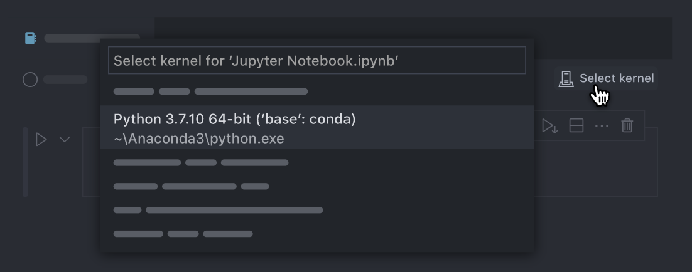

Ambiente di lavoro
Contents
2. Ambiente di lavoro#
Tutto il codice che verrà presentato in questo insegnamento può essere eseguito su tutti e tre i principali sistemi operativi: Windows, MacOS e Linux, nonché sui Notebook online gratuiti forniti da Google (Google Colab). Tutte le attività previste da questo insegnamento possono essere svolte su Google Colab senza installare nulla sul vostro computer. Chi invece volesse lavorare sulla propria macchina potrà trovare utile leggere questo capitolo.
Per programmare sul vostro computer, avete bisogno di due cose:
un’installazione dell‘“interprete” – ad esempio Python 3.10;
uno strumento per scrivere ed eseguire il codice utilizzando un ambiente di sviluppo integrato (IDE) – ad esempio Visual Studio Code.
2.1. Installlare Python in un ambiente virtuale#
2.1.1. Anaconda#
Il modo più semplice per installare Python è quello di installare Anaconda (conda in breve). Per prima cosa, dunque, è necessario procedere con l’installazione di Anaconda sul vostro computer.
Warning
Gli utenti Windows possono scaricare Anaconda seguendo le seguenti istruzioni.
Scaricare il pacchetto “64-Bit Graphical Installer” dal sito di Anaconda.
Eseguire il programma di installazione appena scaricato.
Impostare l’installazione di Anaconda solamente per l’utente corrente (Just Me) e lasciare il percorso di installazione invariato.
Nelle opzioni avanzate scegliere di registrare Anaconda come l’installazione di Python di sistema e selezionare l’opzione relativa all’aggiunta di Anaconda al PATH.
Verificare l’installazione di Anaconda. Eseguire “Anaconda Navigator” cercandolo nella barra di ricerca di Windows oppure dal menù Start -> Anaconda3 (64-bit) -> Anaconda Navigator. Il primo avvio potrebbe richiede diversi secondi. Se l’applicazione si avvia correttamente allora l’installazione di Anaconda è andata a buon fine.
Inoltre, dal menu Start, cercare e aprire “Anaconda Prompt.” Per verificare che conda sia installato, nel terminale digitare conda --version.
2.1.2. L’ambiente virtuale#
Una volta completato il setup di Python è necessario impostare un virtual environment, ovvero una sorta di “contenitore”, separato dal resto del vostro sistema, all’interno del quale installare l’interprete e le librerie. Il motivo per cui si preferisce usare un virtual environment ad un’installazione globale è legato alla rapida evoluzione cui è soggetto il mondo Python: molto spesso, infatti, vi sono differenze sostanziali anche tra release minori dell’interprete, che rendono incompatibili le librerie (e, conseguentemente, i programmi) scritte per le due versioni. Avere un ambiente deterministico che specifica la versione dell’interprete e le versioni delle librerie rappresenta una “garanzia” di funzionamento dei nostri programmi: basterà, infatti, replicare esattamente la configurazione dell’ambiente virtuale, ed il gioco sarà fatto.
Per gestire i nostri ambienti virtuali useremo i programmi conda e pip. Sia conda che pip sono inclusi in Anaconda e quindi, una volta installato Anaconda, saranno disponibili sul vostro computer. In questo tutorial, useremo conda creare, attivare e disattivare l’ambiente virtuale, e pip per installare l’interprete Python e le librerie.
Le istruzioni seguenti devono essere date a terminale. Per prima cosa è necessario uscire dall’ambiente virtuale in cui ci troviamo:
conda deactivate
Creiamo ora un nuovo ambiente virtuale chiamato pymc (il nome è arbitrario). Nell’istruzione seguente specifico che tale ambiente deve contentere la libreria ipython necessaria per usare i nootebok Jupyter con Visual Studio Code.
conda create -n "pymc" ipython
Quando vi verrà chiesto se procedere, rispondete di sì:
Proceed ([y]/n)? y
Attiviamo l’ambiente virtuale che abbiamo creato:
conda activate pymc
Procediamo ora con l’installazione di bambi (“BAyesian Model-Building Interface”; io ho installato la versione dev) – si vedano le istruzioni sulla pagina web della libreria. Installare bambi ha, come side effect, l’istallazione di quasi tutte le altre librerie che ci serviranno:
pip install git+https://github.com/bambinos/bambi.git
Aggiungo le seguenti librerie:
pip install statsmodels
pip install seaborn
pip install graphviz
pip install watermark
Questo conclude la creazione dell’ambiente virtuale pymc che useremo.
2.1.2.1. Altri comandi utili#
Un ambiente virtuale è contenuto in una singola cartella. Possiamo ottenere l’indirizzo di questa cartella con:
conda info -e
Ciò rende molto facile rimuovere completamente un ambiente virtuale. Per fare questo, supponendo che l’ambiente virtuale si chiami my_env, usiamo:
conda env remove -n my_env
Se vogliamo solo rimuovere una libreria dall’ambiente virtuale (supponiamo si chiami package_name), usiamo:
conda remove package_name
2.2. Installazione di un ambiente di sviluppo integrato (IDE)#
Dopo avere installato Python e le librerie necessarie, la seconda cosa che dobbiamo fare è installare un ambiente di sviluppo integrato (IDE). Un ambiente di sviluppo integrato è un’applicazione software che fornisce vari strumenti per semplificare la programmazione.
Ci sono molti IDE diversi. Vi suggerisco di usare Visual Studio Code, un IDE gratuito e open source di Microsoft disponibile per tutti i principali sistemi operativi. Proprio come Python, anche Visual Studio può essere esteso con pacchetti, e sono questi pacchetti, chiamati estensioni, che lo rendono così utile. Visual Studio Code può essere scaricato dalla seguente pagina web.
Visual Studio Code supporta la programmazione sia mediante script che mediante notebook Jupyter. Mentre gli script contengono principalmente codice (e hanno l’estensione file .py), i notebook possono contenere testo e codice in diversi blocchi chiamati “celle”. I notebook Jupyter hanno l’estensione file .ipynb.
Dopo aver installato e aperto Visual Studio Code, andate alla scheda “estensioni” sulla barra verticale delle icone sul lato sinistro (è l’icona che assomiglia a 4 quadrati). Da lì potete installare l’estensione Python per Visual Studio Code, che potete cercare utilizzando la casella di testo all’interno del pannello delle estensioni di Visual Studio Code.
2.2.1. Lavorare con VSCode#
A questo punto sitete pronti per iniziare a lavorare in VSCode. Quando aprite un file .ipynb, però, ricordatevi sempre di selezionare l’ambiente virtuale che volete usare. Da Command Palette (⇧⌘P) usate l’istruzione Python: Select Interpreter. Oppure, più semplicemente, cliccate sull’icona Select kernel di VSCode (in alto a destra, sotto ⚙️):

2.3. Colab#
Per chi utilizza Colab, arviz e pymc possono essere installate, se necessario, nel modo seguente:
import sys
IN_COLAB = 'google.colab' in sys.modules
if IN_COLAB:
!pip install pymc
!pip install arviz